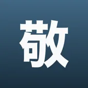

Polite patterns – keigo
です/ます, お〜になる, 美化語 – eleven frames you lay over any word, each inside the sentence where it stands.
〜ます — politeness toward the listener
ます makes a statement polite toward the listener. It does not honor the person acting: 飲みます works for yourself and for another person.
飲む without ます is grammatical but has a less polite tone. 召し上がります honors the person drinking. 飲みます itself makes the statement polite toward the listener without this additional honor for the person acting.
ます makes the statement polite toward the listener. It does not honor the person drinking the coffee.
Examples
- 毎朝、コーヒーを飲みます。I drink coffee every morning.
〜です — politeness after a noun
です makes an “X is Y” sentence polite. It does not honor the person you describe.
会社員だ can sound too casual to someone you have just met. The more courteous でございます also honors no person; でいらっしゃいます honors the person described.
The speaker politely states their occupation. です makes the sentence polite without honoring the speaker.
Examples
- 私は会社員です。I am a company employee.
〜でございます — a more courteous です
でございます is a more courteous です. Use it for things, places, and your own side; it honors no person. Use でいらっしゃいます for a person you honor, not for yourself.
Typical uses include customer service and introducing yourself: 合計は千円でございます or 山田でございます. To ask about a person you honor: 田中様でいらっしゃいますか.
A staff member courteously states the amount. でございます is more courteous than です and honors no person.
Examples
- 合計は千円でございます。The total is one thousand yen.
お〜になる — the other person’s action
The teacher has gone to a meeting in another building. You ask what time they will return.
お + verb stem + になる describes an action by a person you honour, not your own. The stem is the ます form without ます: 読みます → 読み.
The teacher is the person returning and is the person the speaker honors. お〜になる describes that other person’s action.
Examples
- 先生は何時にお帰りになりますか。What time will the teacher return?
お〜する — your own action toward someone
A staff member helps a guest through a door.
お + verb stem + する humbly describes your own action toward a person you honour. The stem is the ます form without ます: 持ちます → 持ち.
The staff member opens the door for the guest. お〜する humbly describes the speaker’s own action directed toward a person they honor.
Examples
- ドアをお開けします。I will open the door for you.
ご〜になる — the other person’s action
ご + a noun of Chinese origin + になる describes an action by a person you honor. ご is usual; some established words require お.
The noun forms a verb with する: 利用する, 説明する, 確認する. These give ご利用になる, ご説明になる, ご確認になる. Memorize exceptions such as お電話になる and お約束になる separately.
The teacher checks the schedule and is the person the speaker honors. 確認 is a word of Chinese origin; with する it forms the verb 確認する. ご〜になる honors the person performing that action.
Examples
- 先生は予定をご確認になります。The teacher will check the schedule.
ご〜する — your own action toward someone
A shop assistant shows a customer a new product.
ご + a stem of Chinese origin + する humbly describes your own action toward a person you honour. It is the counterpart of お〜する for stems of Chinese origin, as in ご案内, ご連絡, ご説明.
The staff member explains how to use the item to a customer. 説明 is a word of Chinese origin; with する it forms the verb 説明する. ご〜する humbly describes the speaker’s own action directed toward the customer.
Examples
- 使い方をご説明します。I will explain how to use it.
お＋和語 — a native Japanese word
On first meeting someone, you politely ask which town or city they live in.
お here precedes the native Japanese noun 住まい. お住まい refers to where the listener lives and honors that person. The role of お depends on use: a thing associated with a person you honor is honorific; your own action toward someone is humble; word beautification alone is 美化語.
お住まい here honors the listener through their place of residence. お手紙を差し上げます humbly describes your own action. お金 and お酒 may merely beautify a word; お alone does not assign ownership.
お住まい refers to where the listener lives. お before the native Japanese word 住まい shows respect for that person.
Examples
- お住まいはどちらですか。Where do you live?
ご＋漢語 — a word of Chinese origin
Many nouns of Chinese origin (漢語), such as 家族, 住所 and 意見, take ご: ご家族, ご住所, ご意見. Established exceptions take お, such as お電話, お時間 and お食事.
The speaker asks about the listener’s family. ご precedes a noun of Chinese origin and shows respect for the person whose family is being discussed.
Examples
- ご家族は何人ですか。How many people are in your family?
美化語 — beautifying the word itself
お in お酒 beautifies the word. In this example it neither honors nor humbles a person. This category is 美化語: making the word itself sound more courteous.
The 敬語の指針 guidelines distinguish 美化語 as a category. Textbooks also include it within polite 丁寧語.
The speaker describes their own habit. お beautifies the word for alcohol; it does not honor the speaker or an owner of the item.
Examples
- 私はお酒を飲みません。I do not drink alcohol.
お〜いたす — your own action and formal courtesy
A guest leaves their luggage in the care of the hotel staff.
お〜いたす combines two functions: it humbly describes your action toward its recipient and adds courtesy toward the listener. It fits customer service and correspondence; in private conversation it can sound artificial.
お〜する supplies the first function and いたす the second. 敬語の指針 calls this 謙譲語Ⅰ兼Ⅱ.
お預かり humbly describes looking after the guest’s luggage and honors the guest. いたします presents the speaker’s action humbly and formally to the listener.
Examples
- お荷物をお預かりいたします。I will look after your luggage.
Where this comes from
Everything above comes from the free part of the Keigo app and has passed its content review.
- Keigo: Polite JapaneseFormal Japanese for work
App Store →Free: levels 1 and 2 in full. Levels 3–5 with one purchase; AI sentence checks: a few a month free, more with a subscription.